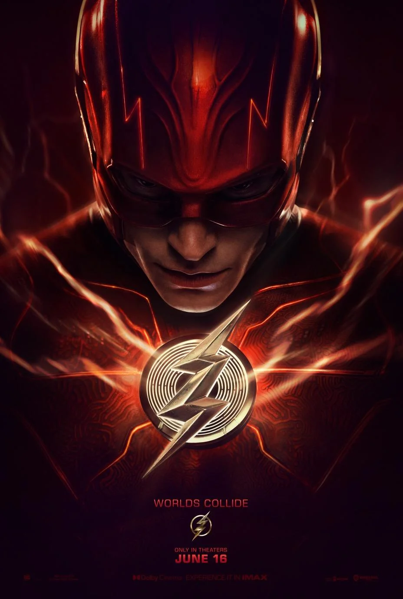

Bienvenido a mi página sobre el mundo Marvel. Aquí encontrarás información sobre tus personajes y cómics favoritos.
Marvel Worldwide, Inc., conocida como Marvel Comics, es una editorial de historietas estadounidense creada en 1939, inicialmente con el nombre de Timely Publications. Entre sus personajes emblemáticos del género superheroico se encuentran Spider-Man, Hulk, Wolverine, X-Men, Capitán América, Iron Man, Thor, Los 4 Fantásticos, Daredevil, Punisher, Los Vengadores, entre otros. A partir de los años 1990, la compañía se posicionó como una de las principales editoriales de cómics del país. El 31 de agosto de 2009, The Walt Disney Company compró Marvel Entertainment por cerca de 4 000 000 000 de dólares, fusionándose con esta el 1 de enero de 2010.
Spider-Man

Spider-Man, también conocido como Peter Parker, es un superhéroe ficticio creado por Stan Lee y Steve Ditko. Apareció por primera vez en Amazing Fantasy #15 en 1962. Spider-Man obtuvo sus poderes después de ser picado por una araña radiactiva, lo que le otorgó fuerza sobrehumana, agilidad y la capacidad de adherirse a las paredes. Utiliza sus poderes para combatir el crimen y proteger a los ciudadanos de la ciudad de Nueva York. Spider-Man es conocido por sus ingeniosos comentarios y su icónico traje rojo y azul.
Ironman

Iron Man, también conocido como Tony Stark, es un superhéroe de Marvel Comics que apareció por primera vez en Tales of Suspense #39 en 1963. Es un inventor multimillonario e industrial que crea una armadura de alta tecnología para combatir el crimen y proteger al mundo. La armadura de Iron Man le otorga fuerza sobrehumana, vuelo y una variedad de armas y dispositivos. Tony Stark es conocido por su ingenio rápido, su amor por la tecnología y su icónica armadura roja y dorada.
Flash
Flash, también conocido como Barry Allen, es un superhéroe de DC Comics que apareció por primera vez en Showcase #4 en 1956. Obtuvo sus poderes después de ser alcanzado por un rayo y ser bañado en productos químicos, lo que le otorgó una velocidad sobrehumana y la capacidad de moverse y pensar a velocidades increíbles. Flash utiliza sus poderes para combatir el crimen y proteger Central City. Es conocido por su traje rojo con símbolos de rayos y su capacidad para crear explosiones sónicas.